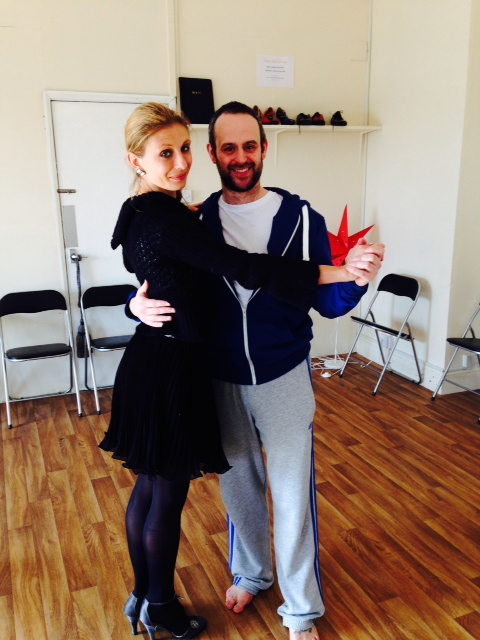

Karate requires balance
Posted on March 16, 2014
by Rik Hemsley
A lifelong Strictly fan (and proud), James was asked by a West Bridgford local to join her in her dancing efforts for Nottinghamshire Hospice.

Bryony is a nurse of 13 years, member of Home Pierrepont Running Club and dancing partner to Bunbu Dojo’s James Martin.
Over the next few weeks Bryony and James will be taking dance lessons. They will then perform at an event at Goosedale Conference Centre on the 25th April 2014 at 7:30pm
If you would like to come and support and laugh with/at James, tickets are £12 or donations welcome (£350pp needs to be raised to take part)